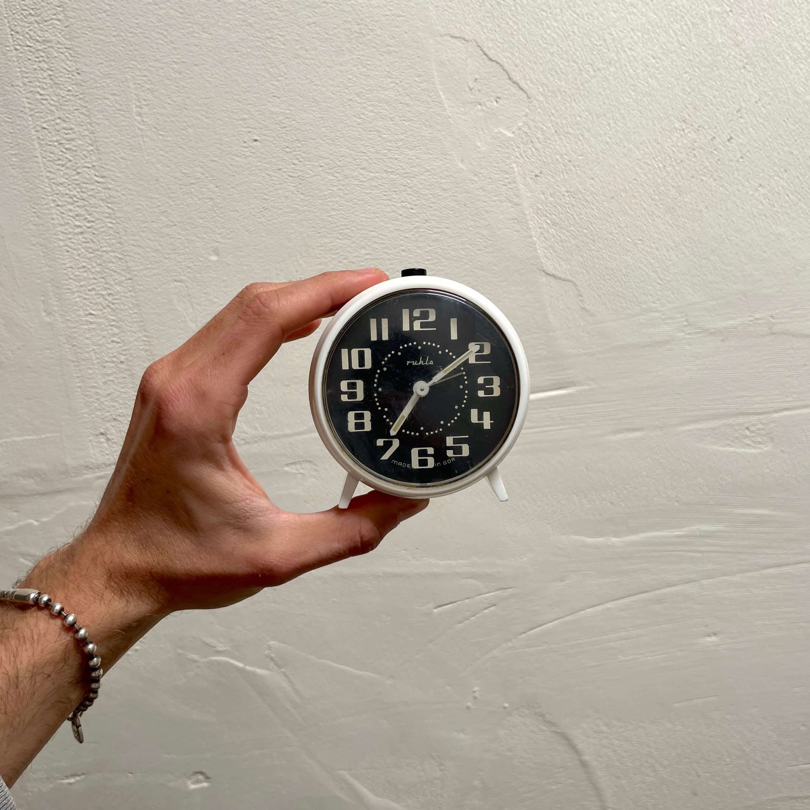
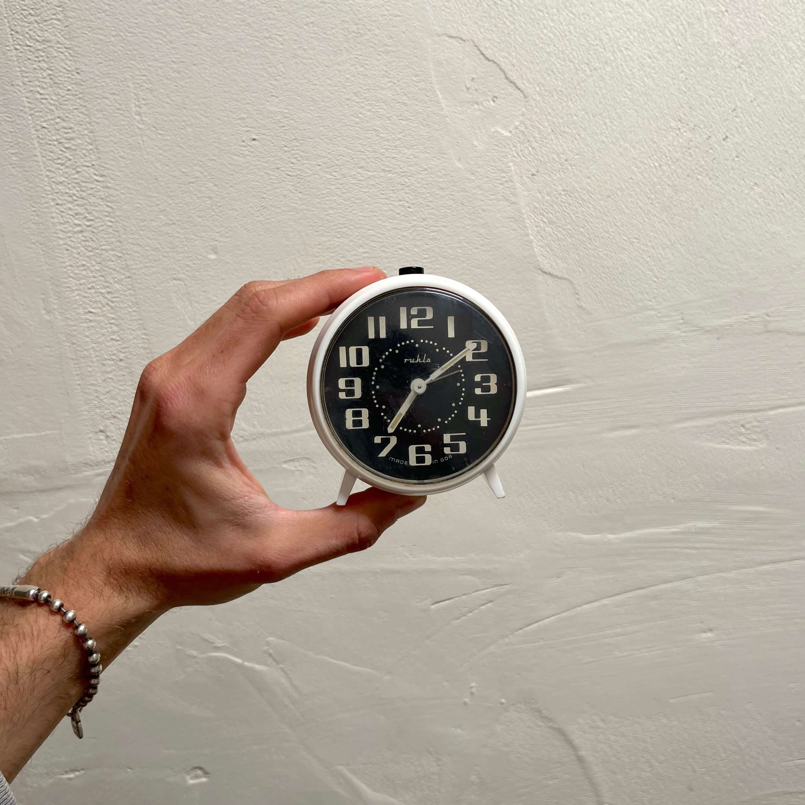

Reloj-despertador mecánico de cuerda Ruhla años 70
Un señor con el que me llevaba en el pueblo siempre vestía un reloj de muñeca mecánico a cuerda. Muchas veces mientras nos sentábamos bajo su avellano se lo quitaba y le daba unas cuantas vueltas. A mi me fascinaba el hecho de que pudiera saber la hora sin necesidad de tener pilas.
Este reloj funciona de la misma manera, para ponerlo en marcha (y mantenerlo de vez en cuando) solo necesitarás girar la manivela posterior. Tiene dos, una para la hora y otra para la alarma. Es muy curioso su funcionamiento, para que suene la alarma debes haberle dado cuerda a su manivela, si no, no sonará. Tiene el botón de apagado en la parte superior.
Este reloj está fabricado en Alemania del Este por Ruhla, una empresa alemana que se extinguió en los años 90. Eran expertos en la fabricación de relojes y en la época del auge del plástico crearon un montón de modelos usando este material, como esta pieza.
Nos encantan los números del dial, la forma tan "futurista" que tiene gracias a sus apoyos y el hecho de que sea a cuerda.
El reloj funciona y la alarma también. Es muy divertido ver como el sonido de la alarma se va reduciendo conforme disminuye el nivel de cuerda que le queda. El estado del reloj puede verse en las fotos.
Vendido

 
